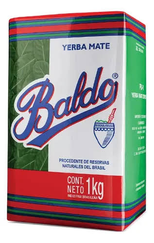
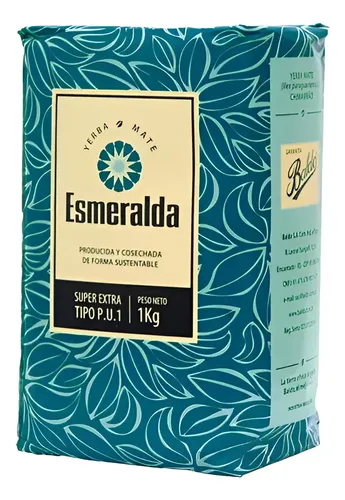
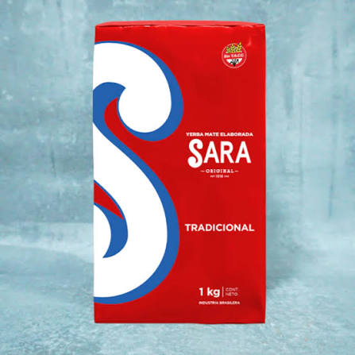
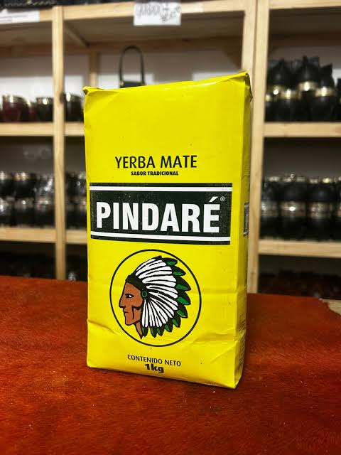

La Esmeralda Despalada 1 kg
Sabor suave, limpia y rendidora para cebadas prolongadas.
$11.160
Consultar

Sabor suave, limpia y rendidora para cebadas prolongadas.

Gran carácter, molienda pareja y sabor intenso persistente.

Calidad seleccionada con estacionamiento óptimo para mateadores exigentes.